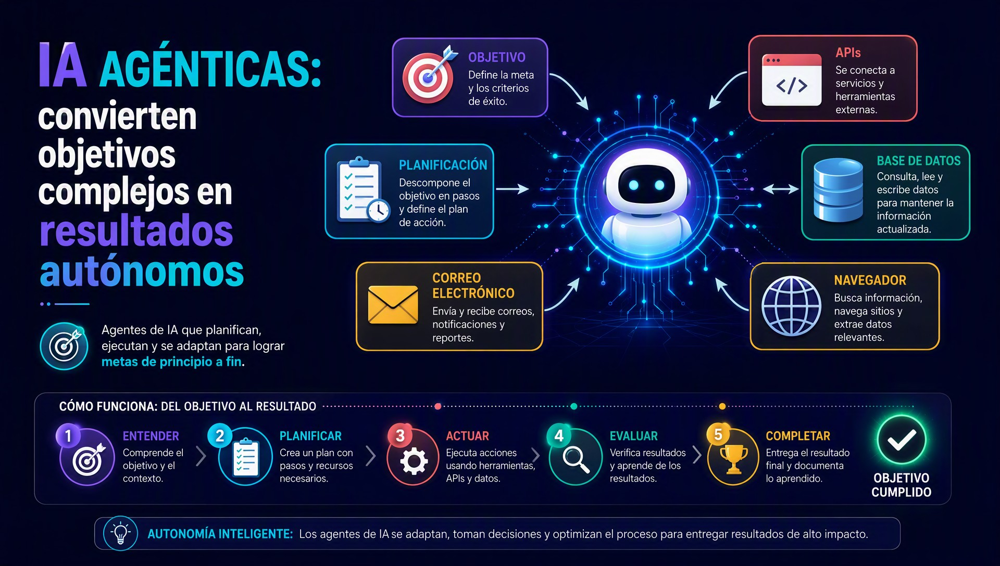
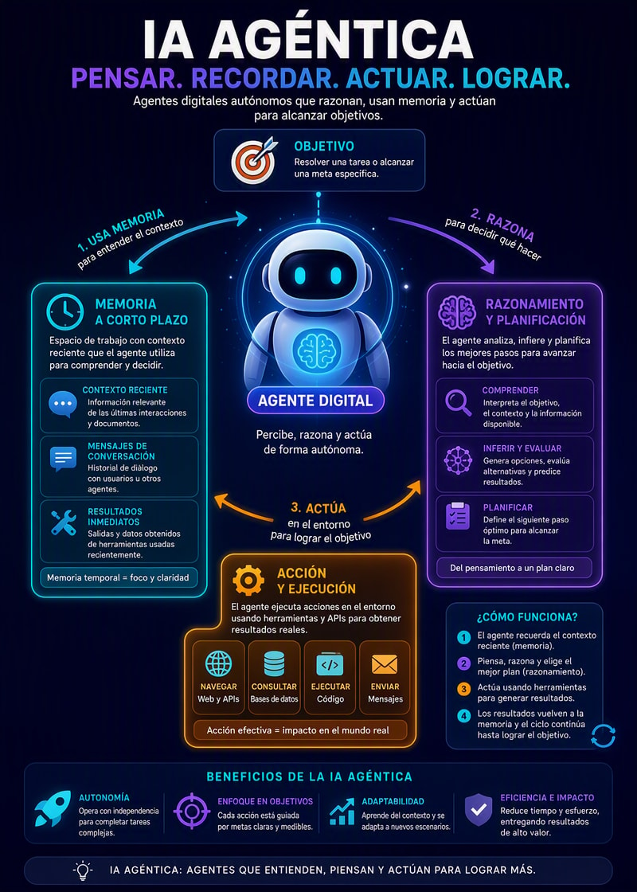

¿Cómo funcionan las IA agénticas?
Autor:
Juan Guillermo Rivera Berrío
Código JavaScript para el libro: Joel Espinosa Longi, IMATE, UNAM.
Recursos interactivos: DescartesJS, Herramientas de IA, ChatGPT y Gemini.
Fuentes: Lato y UbuntuMono
Imagen de portada: ilustración generada por GPT Image 2
Red Educativa Digital Descartes
Córdoba (España)
descartes@proyectodescartes.org
https://proyectodescartes.org
Proyecto iCartesiLibri
https://proyectodescartes.org/iCartesiLibri/index.htm
ISBN:

Esta obra está bajo una licencia Creative Commons 4.0 internacional: Reconocimiento-No Comercial-Compartir Igual.
La inteligencia artificial está experimentando una transformación profunda: hemos pasado de sistemas que simplemente responden preguntas a sistemas capaces de planificar, tomar decisiones, utilizar herramientas y ejecutar acciones para alcanzar objetivos. En este nuevo escenario surgen las IA agénticas, una evolución de los modelos de lenguaje que abre nuevas posibilidades para el desarrollo de aplicaciones, la automatización de procesos y, especialmente, la educación.
Presentación "¿Dónde estamos con IA?".
Este libro, ¿Cómo funcionan las IA agénticas?, propone acercarse a esta tecnología desde una perspectiva esencialmente práctica. No se
trata únicamente de comprender qué es un agente de inteligencia artificial, sino de descubrir cómo piensa, cómo recuerda, cómo actúa, cómo utiliza herramientas y cómo puede colaborar con otros agentes para resolver problemas que requieren múltiples pasos. Para ello, se abordan conceptos fundamentales como la memoria, el razonamiento, la acción y el ciclo ReAct (Reasoning, Acting, Observation), elementos que permiten comprender la anatomía y el comportamiento de estos sistemas.
Un agente de IA es un sistema que no solo responde, sino que también planifica, decide y ejecuta acciones para alcanzar un objetivo concreto de forma relativamente autónoma.A diferencia de un chat tradicional, que suele limitarse a contestar dentro de un menú, reglas fijas o respuestas predefinidas, un agente puede entender instrucciones en lenguaje natural, mantener el contexto y adaptarse mejor a tareas cambiantes.
Su funcionamiento suele apoyarse en varios componentes principales: un LLM como “cerebro” para razonar y generar decisiones, memoria para conservar contexto, herramientas para interactuar con sistemas externos y un bucle de orquestación que coordina la secuencia de pensar, actuar y volver a evaluar. En la práctica, este principio de funcionamiento permite que el agente descomponga un objetivo amplio en pasos pequeños, use herramientas como APIs, bases de datos, correo o navegador, y continúe hasta completar la tarea.

Desde el punto de vista de los procesos internos, el agente interpreta la petición, evalúa qué necesita consultar o hacer, ejecuta una acción y revisa el resultado antes de seguir. Esa cadena de razonamiento y acción explica por qué los agentes resultan más flexibles que un chatbot clásico: no dependen solo de frases programadas, sino que pueden resolver flujos de varios pasos y trabajar con información conectada a sistemas reales.
Los beneficios y ventajas más claros son la automatización de tareas repetitivas, la reducción de tiempo en procesos administrativos y la capacidad de ofrecer respuestas y acciones más útiles en contextos laborales. Entre sus desafíos o limitaciones destacan la necesidad de supervisión, el riesgo de errores si la información de entrada es incompleta y la importancia de configurar bien las herramientas y permisos para evitar acciones no deseadas.
En cuanto a casos reales o ejemplos, un agente puede ayudar en el día a día a resumir correos, buscar información, redactar respuestas o organizar tareas; en el trabajo, puede consultar una base de conocimiento, actualizar un documento y enviar un informe por email en una sola secuencia.También se usan en atención al cliente, soporte interno, análisis de datos y automatización de flujos empresariales, donde aportan valor al integrar conversación natural con ejecución concreta.
En el ámbito educativo, un agente permite generar herramientas como la mostrada en la siguiente página.

Un agente de IA puede entenderse como un sistema que combina memoria, razonamiento y acción para perseguir una meta de forma más autónoma que un modelo aislado. Su memoria a corto plazo funciona como un espacio de trabajo: allí se guarda el contexto reciente, los mensajes de la conversación y los resultados inmediatos de herramientas o acciones; esta memoria desaparece cuando termina la sesión o se agota el contexto disponible. En cambio, la memoria a largo plazo conserva información útil entre sesiones, como preferencias del usuario, hechos relevantes, procedimientos aprendidos o episodios pasados, lo que permite continuidad y personalización.
Desde el punto de vista interno, la arquitectura suele organizarse en varios componentes principales: un modelo base que genera texto, un módulo de memoria para almacenar y recuperar información, un planificador o controlador que decide el siguiente paso, y, en muchos casos, conectores a herramientas externas. El principio de funcionamiento es sencillo pero potente: el agente recibe un objetivo, recupera memoria relevante, la inserta en su contexto actual y luego decide qué hacer con esa información. Cuando la memoria larga se implementa con recuperación selectiva, el agente no “carga todo” en cada interacción, sino solo lo que resulta útil para la tarea concreta.
El ciclo de razonamiento más conocido en estos sistemas es el bucle ReAct —Reasoning, Acting, Observation—, donde el agente alterna entre pensar, actuar y observar. Primero produce una intención o hipótesis sobre cómo resolver el problema; después ejecuta una acción, como consultar una base de datos, llamar a una herramienta o buscar un dato; finalmente observa el resultado y usa esa nueva evidencia para decidir el siguiente paso. Este patrón mejora la capacidad del agente para descomponer problemas complejos, corregir errores sobre la marcha y basar sus decisiones en señales externas en lugar de depender solo de su predicción inicial.
En la práctica, esta anatomía permite aplicaciones muy útiles: asistentes que recuerdan preferencias del cliente, agentes de soporte que mantienen el historial de incidencias, sistemas de análisis que consultan fuentes y refinan respuestas paso a paso, o asistentes de productividad que retoman proyectos largos sin empezar desde cero. Un ejemplo claro es un agente que ayuda a redactar informes: usa memoria corta para seguir el tema de la conversación, memoria larga para recordar el estilo preferido del usuario, y ReAct para buscar datos, contrastarlos y ajustar el informe según lo observado en cada consulta.
Las ventajas son evidentes: más continuidad, mayor personalización, mejor manejo de tareas extensas y una capacidad superior para interactuar con herramientas externas]. Sin embargo, también hay desafíos y limitaciones: la memoria corta está restringida por el tamaño del contexto, la memoria larga puede acumular información irrelevante o desactualizada, y el bucle ReAct depende de que las observaciones sean correctas y de que el agente elija bien sus acciones. En otras palabras, un buen agente no solo “recuerda”, sino que también selecciona, prioriza y verifica; ahí está la diferencia entre una respuesta aislada y un comportamiento verdaderamente agentivo.
¿Por qué vale la pena invertir, al menos 5 dólares, en una API de IA durante este curso?
Una de las mejores inversiones que pueden realizar durante este curso es disponer de acceso a una API de modelos de inteligencia artificial, como OpenRouter, Pollinations AI o DeepSeek. Aunque muchas herramientas ofrecen versiones gratuitas, estas suelen tener limitaciones en velocidad, disponibilidad, número de solicitudes o acceso a modelos avanzados, lo que dificulta el desarrollo de proyectos de IA agéntica.
En este curso no aprenderemos únicamente a conversar con un chatbot; construiremos agentes inteligentes capaces de tomar decisiones, colaborar entre sí, utilizar herramientas externas, generar código, crear imágenes y automatizar procesos. Para lograrlo, es fundamental contar con un servicio que permita realizar cientos o incluso miles de llamadas a modelos de IA de forma estable y programática.
Disponer de una API ofrece varias ventajas:
Además, el costo suele ser bajo en comparación con el aprendizaje obtenido. En muchos casos, 5 dólares en créditos son suficientes para completar la mayoría de las prácticas del curso, y esos créditos se consumen únicamente cuando se utiliza la API. Es una inversión similar a comprar un libro técnico o una licencia de software para una asignatura, pero con el beneficio adicional de adquirir experiencia práctica con herramientas utilizadas en la industria.
El objetivo del curso es que, al finalizar, cada estudiante sea capaz de desarrollar agentes de IA que puedan integrarse en aplicaciones reales. Contar con acceso a una API permitirá aprovechar al máximo todas las actividades, experimentar con mayor libertad y construir proyectos con un nivel de calidad mucho más cercano al entorno profesional.
He aquí el acceso a las API:
Un aplicativo web standalone para agentes de IA se construye como una interfaz ejecutada casi por completo en el navegador, apoyada en una estructura HTML5 limpia, estilos CSS modulares y lógica JavaScript para orquestar eventos, estado y llamadas a servicios externos. Su concepto fundamental es separar presentación, interacción y consumo de datos para que el usuario vea una experiencia fluida sin depender de recargas constantes. En la práctica, esto permite organizar la interfaz en componentes como barra lateral, panel de conversación, visor de imágenes, área de resultados y zona de exportación, todos coordinados desde el cliente. Entre sus beneficios destacan la rapidez percibida, la facilidad de despliegue y la capacidad de integrar flujos de texto e imagen desde una sola capa visual.
La estructura interna suele seguir un principio de funcionamiento modular: el HTML define la jerarquía de contenido, el CSS controla la apariencia responsiva y el JavaScript maneja la lógica de negocio en el navegador. Un patrón útil consiste en desacoplar la vista de la interacción, por ejemplo con módulos para estado de sesión, gestión de prompts, renderizado de respuestas y descarga de archivos. También es común consumir librerías externas mediante CDNs para acelerar la carga inicial y reducir el peso del proyecto, especialmente cuando se usan componentes de interfaz, editores, gráficos o utilidades de formato.
El ecosistema Bring Your Own Key (BYOK) refuerza este modelo porque permite que cada usuario conecte su propia clave para interactuar con modelos de texto e imagen desde el navegador o desde una capa intermedia mínima. Esto tiene aplicaciones prácticas muy claras en agentes de IA: generación de copys, síntesis de documentos, creación de imágenes, clasificación de contenidos y asistentes especializados por dominio. Entre los beneficios están el control de costos, la flexibilidad para cambiar de proveedor y la posibilidad de usar varios modelos según la tarea.
En casos reales, la interfaz debe adaptarse al tipo de salida que el usuario espera. Si el agente produce texto, conviene mostrar un panel principal con streaming, historial y acciones rápidas como copiar, resumir o regenerar; si produce imágenes, el diseño necesita una galería con miniaturas, estados de carga y opciones de descarga o variación; si el resultado son cuestionarios descargables, es útil incluir vista previa, selector de formato y botón para exportar en HTML, PDF o DOCX. En todos los casos, el principio clave es que la interfaz no solo muestre resultados, sino que también guíe el flujo de trabajo. Por eso, una buena arquitectura client-side para agentes de IA combina: interacción inmediata, módulos reutilizables, integración con APIs abiertas y seguridad en claves.
Antes de desarrollar aplicaciones basadas en agentes inteligentes, es necesario disponer de un entorno de trabajo adecuado. En la actualidad existen diversos IDE y plataformas con capacidades de IA agéntica que facilitan tareas como la generación de código, la planificación de proyectos, la depuración, la automatización de procesos y la colaboración entre múltiples agentes de inteligencia artificial.
En este apartado se instalarán y configurarán al menos tres herramientas de IA agéntica, con el propósito de comparar sus capacidades, identificar sus fortalezas y comprender en qué situaciones resulta más conveniente utilizar cada una. Entre las opciones que pueden emplearse se encuentran Antigravity IDE, Visual Studio Code (VS Code), Kiro, Windsurf, OpenCode, Cursor y DeepSeek Harness, todas ellas orientadas a mejorar la productividad mediante asistentes inteligentes o arquitecturas basadas en agentes.
Aunque muchas de estas herramientas comparten funciones similares, cada una presenta características particulares, como distintos niveles de automatización, compatibilidad con modelos de IA, integración con APIs externas, soporte para flujos multiagente o herramientas de planificación y revisión del código. Por ello, conocer varias alternativas permitirá seleccionar la más adecuada según el tipo de proyecto que se desee desarrollar.
Al finalizar esta sección, el estudiante contará con un entorno de desarrollo moderno preparado para construir aplicaciones de IA agéntica, integrar modelos de lenguaje mediante APIs y experimentar con diferentes estrategias de colaboración entre agentes inteligentes, adquiriendo una visión práctica de las tecnologías que actualmente impulsan el desarrollo de software asistido por inteligencia artificial.
La orquestación del Agente de Terminal con OpenCode consiste en convertir un conjunto de instrucciones de alto nivel en una secuencia automática de acciones sobre archivos, recursos y lógica frontend. En modo Build, el agente no solo genera HTML, sino que también ensambla el proyecto, resuelve dependencias, reescribe rutas y prepara la entrega final para que funcione como una herramienta autónoma. Este enfoque se apoya en varios elementos clave: la interpretación del objetivo, la manipulación de archivos locales, la transformación de recursos multimedia y la inyección de comportamiento interactivo. En la práctica, esto permite que un libro educativo, una simulación o un módulo didáctico nazca como un prototipo y termine convertido en un paquete listo para ejecutarse sin intervención manual continua.
El principio de funcionamiento se basa en una cadena de decisiones automatizadas. Primero, OpenCode analiza la estructura del proyecto y detecta qué archivos deben crearse, modificarse o consolidarse. Después, el agente aplica ganchos de empaquetamiento para interceptar recursos como imágenes, audios o videos y convertirlos a Base64 cuando conviene incrustarlos dentro del HTML final. Esta técnica garantiza que la herramienta sea 100% offline, porque elimina la dependencia de servidores externos y reduce fallos por falta de conexión. Un flujo típico incluye: detección del asset, codificación del recurso, sustitución de la referencia externa y validación del resultado final.
La gestión de rutas relativas es especialmente importante cuando el proyecto está dividido en carpetas o módulos separados. En una estructura multipartita, el agente debe resolver correctamente
referencias como imágenes, estilos y scripts para que cada página encuentre sus dependencias sin romper la navegación. Los componentes principales aquí son: un resolvedor de rutas, un normalizador de directorios, un empaquetador de recursos y un verificador de consistencia. Por ejemplo, si un HTML vive en una subcarpeta y un archivo multimedia está en otra, el agente puede reescribir la ruta o incrustar el contenido directamente para evitar errores de carga. Esto mejora la robustez del producto y simplifica la distribución en entornos educativos con conectividad limitada.
La integración de lógica interactiva permite que el contenido deje de ser estático y pase a comportarse como una experiencia guiada. OpenCode puede insertar funciones JavaScript para mecánicas como arrastrar y soltar, validaciones automáticas de cuestionarios, retroalimentación inmediata o control de progreso. Entre las aplicaciones prácticas más comunes están las fichas de aprendizaje autocorregibles y las actividades donde el usuario organiza elementos visuales en una secuencia correcta. Un ejemplo realista sería un módulo donde el agente genera la interfaz, añade eventos de drag-and-drop y conecta una función que verifique respuestas.
Entre los beneficios y ventajas destacan la velocidad de producción, la coherencia del empaquetado y la posibilidad de distribuir materiales que funcionan sin internet. Además, el uso de hooks reduce errores repetitivos y permite que el agente mantenga una lógica de salida consistente entre versiones. Sin embargo, también existen desafíos o limitaciones: los recursos muy pesados pueden inflar el tamaño final, algunas rutas complejas requieren pruebas cuidadosas y las interacciones avanzadas necesitan validación para evitar inconsistencias visuales o lógicas. En conjunto, este enfoque convierte a OpenCode en un orquestador práctico para crear experiencias educativas completas, donde el agente no solo escribe código, sino que construye, adapta y prepara el material para su uso real.
Crea una carpeta para tu app, abre opencode, selecciona la carpeta y escribe la siguiente petición:
Crea una app en HTML5 con 12 mariposas, las cuales se muestran en tarjetas didácticas, con la imagen en el anverso y la descripción en el reverso. Al hacer clic sobre una tarjeta, esta gira para mostrar el reverso y veceversa. El título debe ser dinámico y atractivo.
Los nombres de los animales salvajes los generas con esta función https://enter.pollinations.ai/api/generate/text/{prompt}?key=[API] &model=openai, donde {prompt} es "Dame el nombre de 12 animales salvajes", la IA debe tener memoria, de tal forma que no repita el nombre de un animal.
Por cada animal salvaje, generas una imagen con la función https://enter.pollinations.ai/api/generate/image/{prompt}?key=[API] ?model=zimage, donde {prompt} es el nombre del animal salvaje.
La app debe ser responsive y tener formato 3:4
En la siguiente página se muestra el resultado obtenido con el modelo Muse Spark 1.2
Crea una carpeta para tu app, abre opencode, selecciona la carpeta y escribe la siguiente petición:
Genera una app en HTML5, para generar cuestionarios de selección múltiple, así:
1. Un cuadro de texto que pida la API de OpenRouter (o Pollinations)
2. Un cuadro de texto que pida el [Tema] del cuestionario
3. Un selector de modelos de texto con las siguientes opciones: deepseek/deepseek-v4-flash-0731, google/gemini-3.5-flash-lite y tencent/hy3 (para Pollinations: qwen3.7-flash, gemma-4-31b, gpt-5.6-luna y gemini-fast)
4. Un selector de número de preguntas, entre 4 y 10
5. Para las funciones generadoras de texto, debe usar este formato:
curl https://openrouter.ai/api/v1/chat/completions \
-H "Content-Type: application/json" \
-H "Authorization: Bearer $OPENROUTER_API_KEY" \
-d '{
"model": "~openai/gpt-latest",
"messages": [
{
"role": "user",
"content": ""
}
]
}'Para Pollinations
fetch('https://gen.pollinations.ai/v1/chat/completions', {
method: 'POST',
headers: { 'Authorization': `Bearer ${accessToken}`, 'Content-Type': 'application/json' },
body: JSON.stringify({ model: 'openai', messages: [{ role: 'user', content: 'yo' }] })
});
Los métodos GET y POST son los comandos principales que utiliza tu navegador para comunicarse con un servidor web.
Se utiliza para solicitar o pedir información de un servidor.
Se utiliza para enviar o crear información en el servidor.
Observa la siguiente presentación, preferiblemente en pantalla ampliada:
Presentación Métodos Get y Post.
Diseñar agentes de IA con especificaciones claras en DeepSeek Harness permite transformar una idea difusa en un sistema de generación mucho más confiable, especialmente cuando el objetivo es producir código limpio, consistente y sin errores. En este enfoque, los Steering Docs actúan como una guía de comportamiento del agente: definen qué debe hacer, qué no debe hacer, cómo debe estructurar la salida y qué estándares de calidad debe respetar. Su lógica combina varios elementos clave: concepto fundamental, porque fija la intención del agente; componentes principales, porque separa reglas, plantillas y restricciones; principio de funcionamiento, porque convierte instrucciones en decisiones de generación; procesos internos, porque ordena validación, corrección y refinamiento; y aplicaciones prácticas, porque sirve para construir interfaces, componentes y flujos de trabajo reproducibles.
DeepSeek Harness actúa exactamente como su nombre indica: un arnés. Es la estructura de soporte que permite a los desarrolladores atar la inmensa fuerza bruta de los modelos de billones de parámetros y canalizarla hacia aplicaciones útiles, predecibles y seguras. DeepSeek Harness incorporó lo que ellos llaman Flujos de Trabajo Agénticos Deterministas. Esto significa que el marco de trabajo proporciona "barandillas" (guardrails) matemáticas que garantizan que un agente no se desvíe de su tarea o sufra de alucinaciones destructivas en procesos críticos.
En la planificación del flujo, DeepSeek Harness permite coordinar y orquestar múltiples agentes de inteligencia artificial para generar plantillas visuales interactivas de manera incremental, en lugar de producir una interfaz completa en una única ejecución. Este enfoque
aprovecha la colaboración entre agentes especializados, donde cada uno asume una función específica dentro del proceso de desarrollo, reduciendo errores, mejorando la calidad del resultado y facilitando la comprensión y el mantenimiento del código. En una secuencia típica, un agente define la estructura base, otro incorpora los componentes visuales, un tercero implementa las interacciones y un cuarto valida y optimiza el resultado final.
Cuando la interfaz debe manejar contenido especializado, la arquitectura de DeepSeek Harness puede asignar agentes específicos para cada tipo de información. Por ejemplo, un agente puede encargarse exclusivamente del procesamiento de expresiones matemáticas utilizando MathJax o KaTeX, mientras otro interpreta documentación escrita en Markdown, preservando correctamente títulos, listas, bloques de código, tablas y otros elementos de formato. Este enfoque evita conflictos entre distintos motores de renderizado.
La simulación en DeepSeek Harness permite probar cómo trabajan los distintos agentes de IA antes de incorporarlos a una aplicación real. Gracias a estas pruebas es posible verificar si cada agente cumple correctamente su función, respeta las especificaciones definidas y colabora adecuadamente con los demás para generar una interfaz consistente. Por ejemplo, se puede solicitar la creación de una plantilla educativa con fórmulas matemáticas, secciones desplegables y texto en Markdown. Después, se revisa si los agentes generan correctamente cada elemento y si el resultado final cumple los requisitos establecidos. Si es necesario, se ajustan las instrucciones o la distribución de tareas hasta obtener una salida estable y de buena calidad.
En conjunto, DeepSeek Harness no solo permite generar aplicaciones con IA, sino también diseñar, probar y optimizar flujos de trabajo colaborativos entre múltiples agentes, obteniendo soluciones más robustas, organizadas y fáciles de mantener.
Antes de escribir el taller, conviene desplegar Antigravity como un entorno de trabajo colaborativo donde docentes y estudiantes puedan iterar sobre una misma interfaz HTML sin fricción: una persona define la estructura pedagógica, otra ajusta la lógica interactiva y otra valida la experiencia final en el navegador. En este flujo, el concepto fundamental es entender Antigravity como un espacio para coordinar agentes de IA y personas en torno a una meta concreta; sus componentes principales incluyen el editor, la vista previa en vivo, el control de versiones y el canal de tareas; su principio de funcionamiento se basa en dividir la construcción en microtareas verificables; y sus procesos internos permiten que cada cambio se integre, pruebe y vuelva a revisar rápidamente. Las aplicaciones prácticas se ven cuando el equipo decide programar un Generador de Evaluaciones Visuales o un Asistente Temático Multimodal.
En el ejercicio guiado en vivo, el primer paso consiste en crear la base del proyecto y definir la estructura de la página: encabezado, zona de interacción, área de resultados y botones de acción. El grupo puede usar Antigravity para repartir tareas como si fueran roles de producción: un agente propone la maqueta, otro redacta las preguntas o rutas temáticas, y un tercero implementa la lógica de evaluación o recomendación. Aquí aparecen claramente los beneficios y ventajas del enfoque: rapidez para prototipar, mejor organización del trabajo y mayor claridad para detectar errores antes de la entrega. También surgen desafíos o limitaciones, como mantener consistencia entre lo que propone el contenido educativo y lo que realmente ejecuta el código, o evitar que la interfaz crezca sin control si no se establecen criterios simples desde el inicio.
A partir de ahí, la construcción puede avanzar con una lógica progresiva: primero la interfaz mínima, luego la interacción, después la personalización visual y finalmente las comprobaciones. En el caso del Generador de Evaluaciones Visuales, el sistema puede mostrar tarjetas con preguntas, opciones y retroalimentación inmediata; en el caso del Asistente Temático Multimodal, puede aceptar una selección de tema, mostrar sugerencias, integrar imágenes de referencia o bloques de texto y ofrecer respuestas guiadas. Los procesos internos se vuelven visibles cuando cada acción del usuario dispara una función concreta: seleccionar, comparar, mostrar resultado, reiniciar o exportar. Como caso real o ejemplo, un docente puede pedir que el asistente adapte el contenido de historia, ciencias o ciudadanía a distintos niveles de dificultad, mientras el estudiante ve cómo el mismo archivo responde de manera distinta según su elección.
La prueba de fuego llega al exportar el archivo final .html y ejecutarlo localmente en el navegador de los estudiantes, sin depender de instalaciones complejas ni servidores externos. En esta etapa, el equipo valida que el proyecto cargue correctamente, que los estilos se mantengan, que los botones funcionen y que la retroalimentación aparezca sin errores. El criterio de éxito no es solo técnico, sino también pedagógico: la herramienta debe ser comprensible, útil y fácil de usar en clase. Entre los beneficios y ventajas de esta validación directa destacan la portabilidad, la facilidad de distribución y la posibilidad de repetir la actividad en distintos contextos educativos; entre los desafíos o limitaciones, la compatibilidad con navegadores, el peso de los recursos gráficos y la necesidad de evitar dependencias que rompan el funcionamiento offline.
Para cerrar el taller, conviene revisar el resultado como si fuera una entrega profesional: comprobar accesibilidad, corregir textos, simplificar la navegación y verificar que cada interacción tenga sentido didáctico. Una buena práctica es pedir al grupo que responda tres preguntas finales: qué aprende el estudiante, qué hace la herramienta por sí sola y qué parte sigue requiriendo guía humana. Con esa reflexión, el proyecto deja de ser solo una página web y se convierte en un ejemplo claro de agentes de IA aplicados a la educación, donde la colaboración, la prueba rápida y la exportación final a HTML hacen posible llevar una idea desde el diseño hasta el aula con precisión y autonomía.